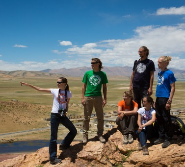

Реальные истории людей об отказе от мяса
Вегетарианство - здравый образ жизни
Благодарим всех, откликнувшихся на призыв о содействии и поведавших свои личные истории.
Благодарим всех, откликнувшихся на призыв о содействии и поведавших свои личные истории. Эта статья — собрание реальных рассказов реальных людей. Каждое слово в коротеньком повествовании, это чья-то жизнь, эмоции, переживания. Читая разные истории, окунаясь в разные судьбы, приходит понимание уникальности каждого человеческого пути, осознание особенности внутреннего миропорядка каждой личности. Есть в человеке струны, но для каждого, побуждающей будет своя, индивидуальная мелодия, сыгранная на них,
способная дать силы изменить жизнь, двигаться вперёд. Такие разные мотивы двигают людей к отказу от потребления мяса, такие разные ситуации и встречи, подталкивают к этому. Всё же, некоторые из историй можно подытожить, подвести под один знаменатель и постараться вычленить единую суть процессов, побудивших людей отказаться от мясного рациона. Будет замечательно, если какая-то из историй историй, наиболее сильно затронет душу читающего, и поспособствует его новой жизни. Благодарим всех, откликнувшихся на призыв о содействии и поведавших свои личные личные истории. Мясо излишне закисляет внутреннюю среду организма, что подавляет азотофиксирующие бактерии в дыхательных путях, меньше азота усваивается из воздуха, следовательно, увеличивается потребность в пище («жор»).
6. Излишнее количество белков и пуриновых оснований, содержащихся в мясе, образует в организме человека много кислотных остатков - мочевой кислоты, вызывая зашлаковку и отравление организма. Кислотные отбросы мяса (как и сахара, изделий из белой муки, пирожных) соединяются, нейтрализуясь, с органической известью из костей, повышается их хрупкость (остеопороз), возникают болезни суставов (ревматизм, артрит) и зубов.
7. Мясо сильно загрязнено гнилостными бактериями (они появляются сразу после убоя животного, значительная их часть устойчива к температурной обработке), трупным ядом - ведь от бойни до потребления нередко проходят недели (и даже месяцы), яйцами глистов. Продукты некробиоза, содержащиеся в мясе, по своему действию родственны болиголову и стрихнину. Кроме того, мясо убитого животного зашлаковано более чем двумястами вредными гормонами, которые выделяет организм животного от ужаса, когда его ведут на убой.
Часто для ускорения роста животных или для их лечения им вводят препараты, которые обладают канцерогенными свойствами.
А сколько нитратов, гербицидов и инсектицидов попадает в организм животных вместе с кормом, а затем и в наш организм?
8. Мясо содержит много экстрагенных веществ, излишне возбуждая аппетит, что ведет к перееданию.
9. Для переваривания мяса требуется 6-8 часов (овощей - 4, фруктов - 1), так что к следующему приему пищи это мясо не успеет перевариться полностью и частично начнет гнить, а так как нельзя же целый день питаться одной белковой пищей, то в этот следующий прием в организме окажутся бок о бок несовместимые между собой продукты, что еще больше усилит гниение. Гниющее непереваренное мясо (а также яйца, молоко) выделяют метан, разрушающий витамин В3, в результате (без этого витамина) фермент инсулин теряет свою активность и сахар в крови не преобразуется в животный сахар - гликоген. Так возникает сахарный диабет.